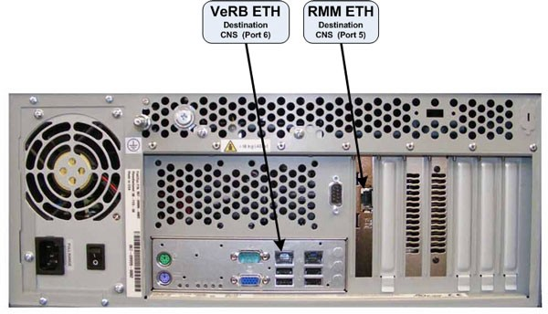

Operating Documentation
Direction 5193574-800, Rev# 22
LightSpeed 7.X Service Methods
Module Version 4.0, Version Date 6/2/10
Operating Documentation |
| Required Persons | Preliminary Reqs | Procedure | Finalization |
|---|---|---|---|
| 1 | 60 mins |
This procedure describes and illustrates the steps necessary to replace the Volume Reconstruction Box Computer (VeRB).
| Last revised: | 2-June-2010 |
| Item | Qty | Effectivity | Part# | Manufacturer | |
|---|---|---|---|---|---|
| Standard FE Toolkit | 1 | - | - | - | |
| 4 mm Hex Key Wrench | 1 | - | - | - | |
| Item | Qty | Effectivity | Part# | Manufacturer | |
|---|---|---|---|---|---|
| VeRB Computer | 1 | - | 5255299-30 | - | |
| ||||
| ELECTROCUTION HAZARD | ||||
| HIGH VOLTAGE PRESENT | ||||
| USE PROPER LOCKOUT / TAGOUT PROCEDURES BEFORE REPLACING THE COMPONENTS. |
| ||||
| POTENTIAL FOR INJURY TO SERVICE PERSONNEL. | ||||
| VERB COMPUTER CHASSIS CAN WEIGH IN EXCESS OF 40 POUNDS. | ||||
| DEPENDING ON YOUR HEIGHT AND ACCESS TO EQUIPMENT REMOVAL/INSTALLATION, LIFTING ASSISTANCE MAY BE REQUIRED. USE YOUR JUDGMENT TO DETERMINE IF LIFT ASSIST OR A SECOND PERSON MAY BE REQUIRED TO ASSIST IN REMOVAL AND INSTALLATION. |
| ||||
| FOLLOW ALL REQUIRED SAFETY AND PPE PROCEDURES CUSTOMARY FOR YOUR ORGANIZATION WHEN WORKING ON THIS PRODUCT. | ||||
| Condition | Reference | Effectivity |
|---|---|---|
Access to both the front and rear of the Operator Console is required. Move the console away from walls and remove obstacles in room. | - | - |
Only trained service personnel should service the GE CT Scanner. | - | - |
Select one of the following methods to power off the Operator Console:
If applications are running, click the Shut Down icon and select Shut Down.
If applications are down, open a Unix Shell using the Toolchest. Type: {ctuser@hostname} halt. Press <Enter>.
The Operator Console monitor will display a ‘System Halted’ message when it is acceptable to power off the Operator Console.
Power OFF the Operator Console at the front panel switch. (See Illustration 1.)
Illustration 1: Console Power Switch

Perform prescribed Lockout/Tagout procedure. For added protection, disconnect the Twist-N-Lock Main Power Cable from rear of console.
Remove the front and rear Operator Console covers per prescribed cover removal procedure.
Remove console's Keyboard Tabletop and set aside. This will allow better access to the console's computer rack.
Remove the cable connections at the rear of the VeRB Computer chassis being replaced.
| NOTE: | Verify that all cables are labeled and clearly marked. If necessary, add a label for clarity. |
Remove the power cord at the rear of the VeRB Computer chassis.
Remove the four (4) 5mm socket cap mounting screws and washers from the front of the VeRB Computer chassis, holding the chassis to the Operator Console rack.
Illustration 2: VeRB Computer Mounting

Slide the VeRB Computer chassis forward (out the front of console) and set aside.
Refer to Equipment Service - Console.
Slide the replacement VeRB Computer into the Operator Console from the front.
Replace the four (4) 5mm socket cap mounting screws and washers to secure the VeRB Computer chassis to the Operator Console rack. Torque to 4.6 N-m.
Mount the power cord to the rear of the VeRB Computer chassis and verify that its power supply switch is turned to the ON position.
Replace the rear cable connection(s).
Illustration 3: VeRB Cable Connections & Destination

| NOTE: | For cabling details, refer to the appropriate interconnect located in the System Diagrams folder of this service methods publication. |
Reconnect the Twist-N-Lock Main Power Cable from rear of console and remove Lockout Tagout protection applied earlier.
Power ON the Operator Console at the console’s front panel switch.
Do not allow Applications to start. During boot-up, cancel Application Startup when the CT Software Auto-start pop-up window appears.
Verify that the VeRB Computer has powered up and is not displaying or sounding any POST Errors.
| NOTE: | See VeRB Troubleshooting if any errors appear. |
In order to assure proper operation of the VeRB computer, perform the System Configuration procedure.
Open a Terminal window and log on as Root.
Type: reconfig[Enter]
Click[Accept]
| NOTE: | No changes are required in the System, Preferences, Hardware, and Network settings. The procedure needs to be executed in order for the automated scripts to run. During the reconfiguration process the DHCP Server running on the Host Computer is reconfigured to support the new VeRB Computer Ethernet MAC addresses. |
| NOTE: | Until the System Configuration Procedure is performed, the Linux OS bootup text will display an error message when the VeRB computer attempts to mount its NFS on the Host Computer. Ignore the error message. |
After completing the System Configuration procedure, perform a complete shutdown of the Operator Console and restart the system.
Refer to System Scanning Test to confirm proper operation.
Reinstall Console Front and Rear Covers and Keyboard Tabletop assembly.